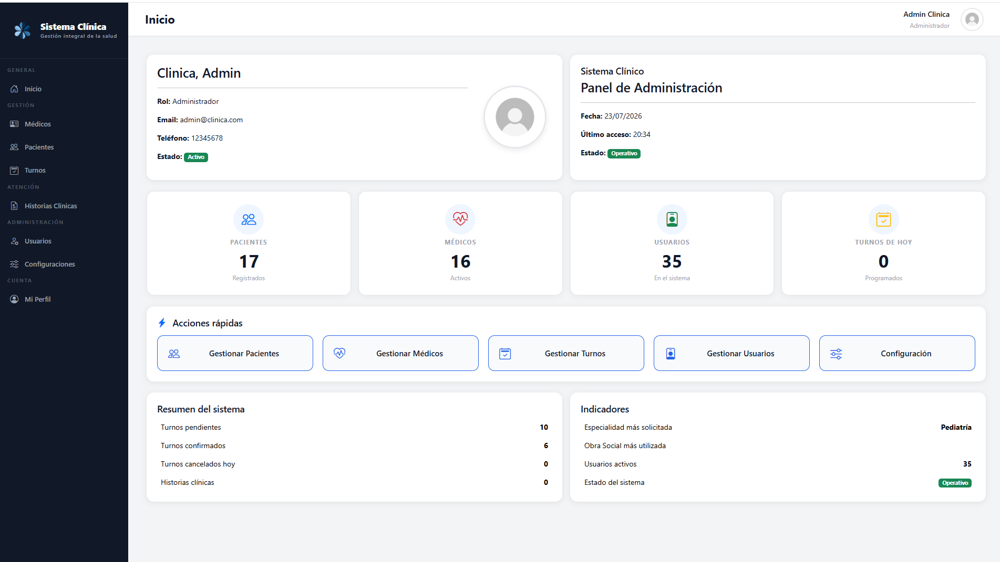

Aplicación Web (ASP.NET)
Clínica Web
Sistema integral de turnos y gestión de clínica médica. Permite administración de pacientes, médicos, disponibilidades, historias clínicas, y turnos mediante roles personalizados (Admin, Recepción, Médico, Paciente).
Desafíos & Soluciones:
- Arquitectura N-Capas con separación estricta de lógica de negocio y acceso a datos (ADO.NET).
- Control de acceso seguro basado en roles con validación en Session.
- Diseño dinámico adaptable con Bootstrap 5 e iconos responsivos.